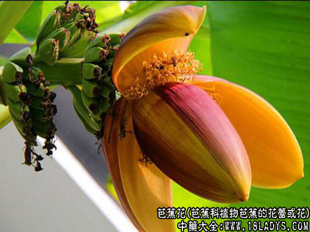

来源：芭蕉花为芭蕉科植物芭蕉的花蕾或花。多栽培于庭园农舍附近。分布山东以南。
性状：穗状花序顶生，下垂；苞片佛焰苞状，红褐色或紫色，每苞片有多数小花，除苞片最下面具3～4不孕花外，其余皆发育。花单性，通长雄花生于花束上部，雌花在下部；花冠近唇形，上唇较长，先端5齿裂，下唇较短，基部为上唇所包；雄花具雄蕊5，离生，伸出花冠；药线形，2室；雌花子房下位3室，花柱1，柱头近头状，光滑。
性味：甘淡微辛，凉。
功效与作用：治化痰软坚，平肝，和痪，通经。治胸隔饱胀，院腹痞疼，吞酸反胃，呕吐痰涎，头目眩昏，心痛怔忡，妇女经行不畅。
用法用量：内服：煎汤，10～15克；或烧存性研末。
处方举例：1、治心痹痛：芭蕉花烧存性，研，盐汤点服10克。
2、治反胃吐呢饮食酸痰，胃、腹疼痛，胸隔饱胀：芭蕉花10克。水煎，点水酒服。忌鱼、羊、生冷、蛋、蒜。
3、治怔忡不安：芭蕉花1朵，煮猪心食。
4、治肺痨：芭蕉花100克，猪肺250克。水炖，服汤食肺，每日1剂。
5、治心绞痛：芭蕉花250克，猪心1个。水炖服。